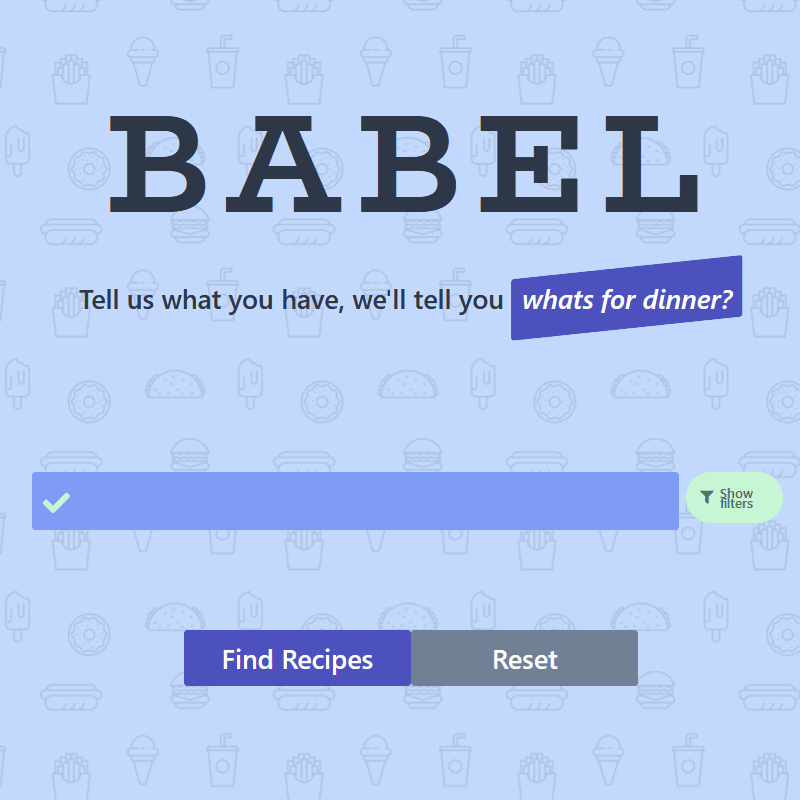
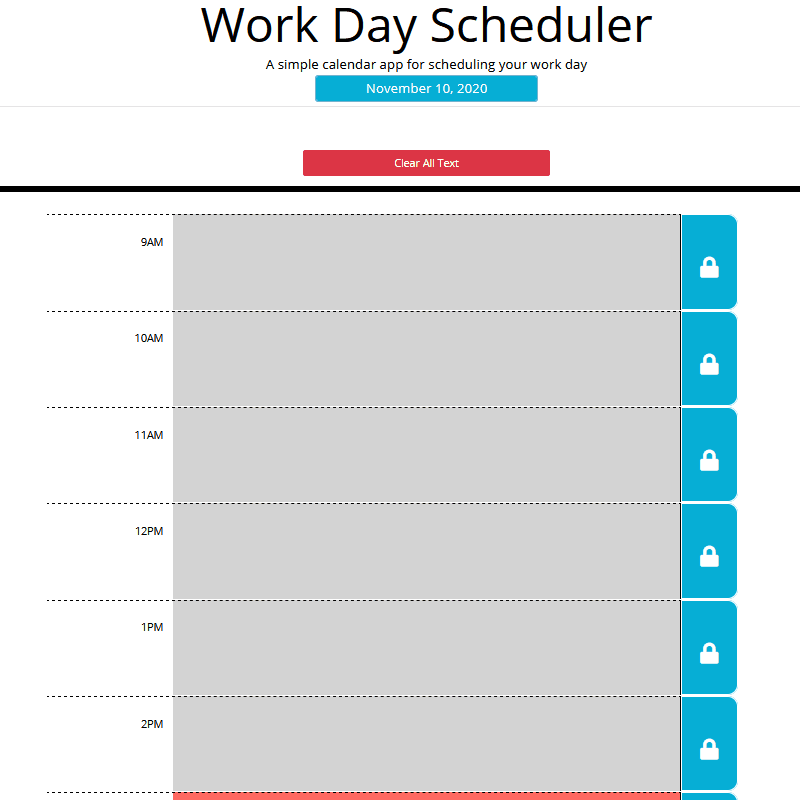
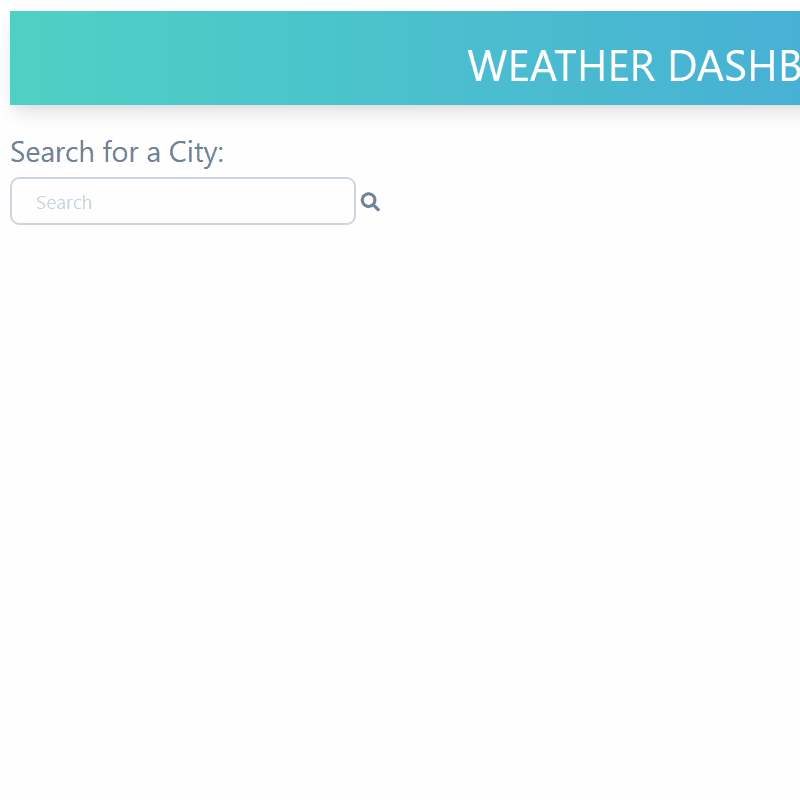

Home
Projects
Skills
About
Contact
Babel
Generates recipes based off of desired ingredients

Day Planner
Plan your day and track the current time

Weather Dashboard
Use the OpenWeatherAPI to search forecasts
